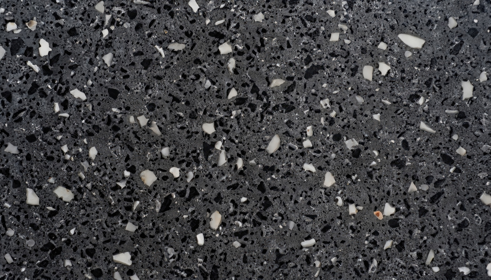

Vertical · HoReCa
Двойная задача: эстетика лобби-зала + slip-safety + кислотостойкость кухни. На фронте — терраццо, микротопинг, ComfortFloor PS-23. На back-of-house — PurCem с slip class R12. Ремонт ночью без потери выручки.

Проблематика
безопасность
Жир + вода = травмы персонала и страховые премии. Стандартные эпокси-полы R9 не справляются.
downtime
Ресторан 200 м² — упущенная выручка ₪15-30k/день. Месячный простой на ремонт нерентабелен.
эстетика
Лобби, ресторан, бар — каждый квадрат в зоне видимости. Дизайн-проект архитектора нужно реализовать точно.
эксплуатация
Цементное терраццо реагирует с кислотами — травленые пятна. На ресторанах с винной картой стандартное терраццо приходит в негодность за 2–3 года.
Рекомендованные системы
Терраццо EM-10 · 12 мм
Эпокси-терраццо — кислотостойкое, кастомная палитра, signature-материал в зоне гостя.
ПодробнееPurCem 21N · 6 мм
Slip-class R11, HACCP, выдерживает мойку CIP, термошок от плиты до холодильника.
ПодробнееМикротопинг · 2.5 мм
Бесшовная декоративная поверхность барной стойки, акцентных стен, тёплая на ощупь.
ПодробнееПоедем на замер с архитектором, согласуем палитру терраццо, рассчитаем slip-class под санитарные требования.